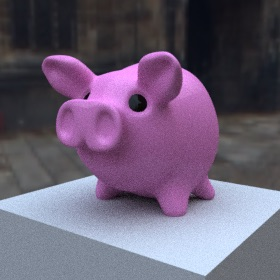
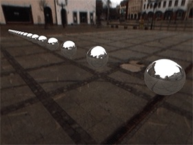
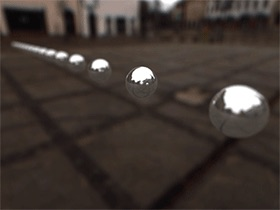
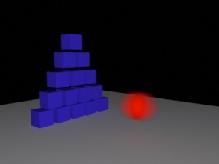

Falcon
Falcon is Cheetah3Ds new render engine which was introduced with Cheetah3D 7.0. It's an unbiased path tracer. The future development will mainly focus on the new Falcon rendering engine.
GeneralLet's start which some general properties of the Cheetah renderer which are used to set the output resolution of the image/movie and the antialiasing quality of the renderer.
Properties
- Resolution: Output resolution of the rendered image/movie.
- Exposure: Exposure adjustment of the rendered image/movie.
- Gamma: Gamma value of the rendered image/movie.
- Dither: Adds some noise to the rendered image/movie.
- Samples: The number of paths which are traced per pixel. The more samples you use the better the quality of the image gets. Setting the samples property to zero will cause Falcon to compute an infinite number of samples. So you to have to stop the render job manually once the renderer reached the quality you desired.
|  |
 |
Ray depth (bounces) Higher values generate a more accurate solution but also take more time. There are also more samples necessary if you use more bounces since the noise usually increases. The default values usually offer a great starting point for most scenes.
Properties
- Total bounces: The maximun number of bounces per path (diffuse, glossy and specular together).
- Diffuse bounces: The maximum number of diffuse bounces per path.
- Glossy bounces: The maximum number of glossy bounces per path.
- Specular bounces: The maximum number of specular bounces per path.
- Caustics: Turn caustics computation On/Off. Caustics can be just computed for physical light sources (lights which have some geometry, like area lighty or environment lights). Turning off caustics can reduce fireflys (noise) considerably.
Depth of FieldIn real life your eyes can only focus on one object. Object which are closer or more distant away appear blurred. The perfectly sharp images of a renderer therefore could appear unrealistic. But with help of the Depth of Field (DOF) you can simulate the depth of field effect. Please check out the small gif animation to see the difference between a rendering with DOF and without DOF.
|  |  |
Properties
- Depth of field: Turns depth of filed effect On/Off.
Motion blur Motion blur appears if objects or the camera are moving while the shutter of the camera is open. The strength of the motion blur is therefore mainly controlled by the shutter time property of the camera object.
At the moment motion blur just works when rendering animations.

Properties
- Camera: Turns camera motion blur On/Off.
- Transformation: Turns object transformation motion blur On/Off.
- Deformation: Turns mesh deformation motion blur On/Off. These are for example skeletal animations.
G-BufferThe G-Buffer records extended image attributes like HDR colors, the pixels depth or object IDs to an internal EXR file (see also OpenEXR). This additional image information is very helpfull if you want to apply postprocessing effects like a Z-Buffer depth of field or if you want to composite the renderer image into some real world footage. If the image was rendered with the G-Buffer turned ON the render manager will allow you to save EXR files.
Properties
- Save G-Buffer: Turns the G-Buffer On/Off
- Color depth: Determines if the colors are recorded with 16Bit (Half Float) or 32Bit (Float) per component.
- Z-Buffer: Records the objects depth value to the G-Buffer.
- Layer ID: Records the objects Layer-ID to the G-Buffer.
- Object ID: Records the objects Object-ID to the G-Buffer.
- Material ID: Records the objects Material-ID to the G-Buffer.
Other Some additional attributes of the renderer.
Properties
- Clamp sample: Clamps the max. value of each sample. Decreasing that value can reduces noise but it also causes the loss of some light.
- Textures: Turn texturs On/Off for the whole scene.